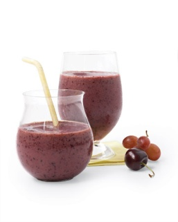

Cherry-Berry Tea Smoothies

Protein-rich tofu gives this drink a thick and creamy texture, and frozen blueberries, cherries, and grapes deliver deep flavor and additional antioxidants. Makes 4 servings (110 calories each)
Ingredients
• 3/4 cup water
• 2 Rooibos tea bags
• 6 ounces silken tofu
• 10 ounces (2 cups) frozen sweet cherries
• 6 ounces (1 cup) frozen grapes
• 3 ounces (1/2 cup) frozen blueberries
Directions
1. Bring water to a simmer. Immediately remove from heat, and add tea bags. Let steep, uncovered, for 8 minutes. Discard tea bags. Refrigerate tea until cold, about 40 minutes.
2. Puree tea, tofu, and fruit in a blender until smooth, and serve cold